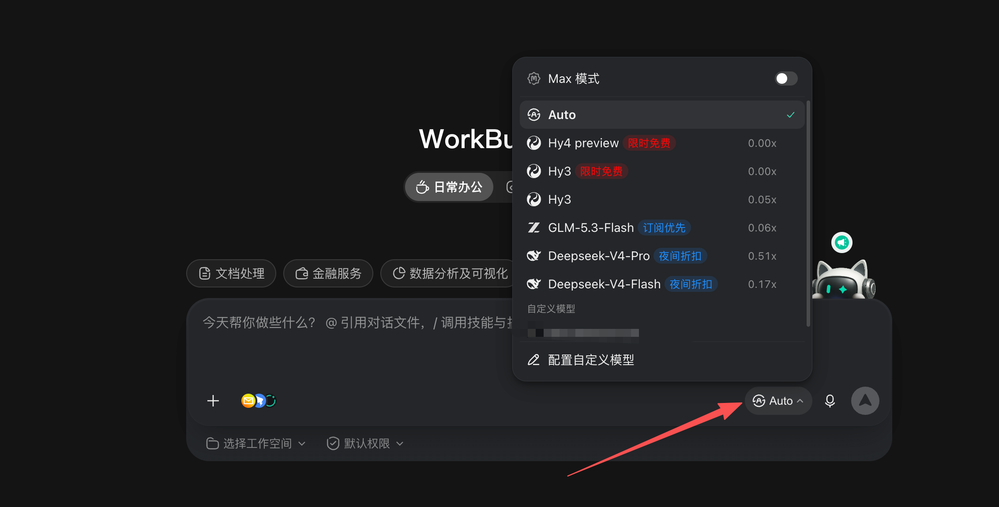
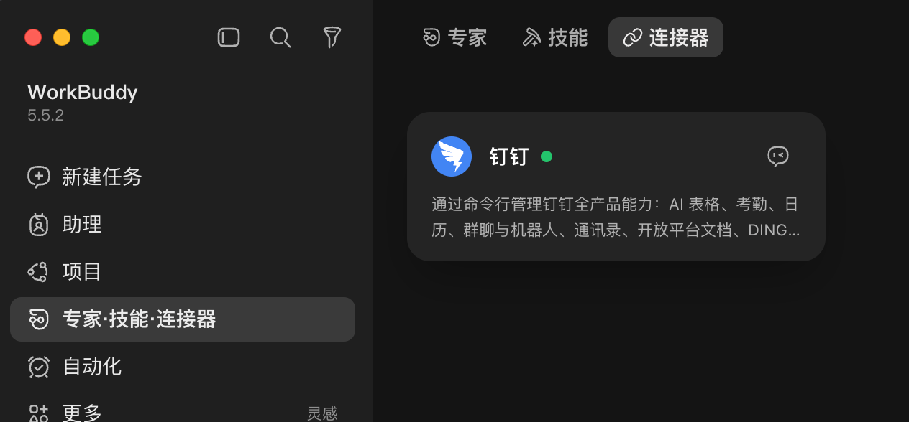
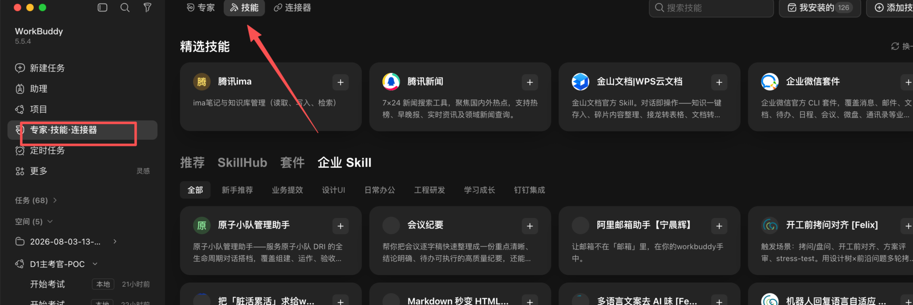
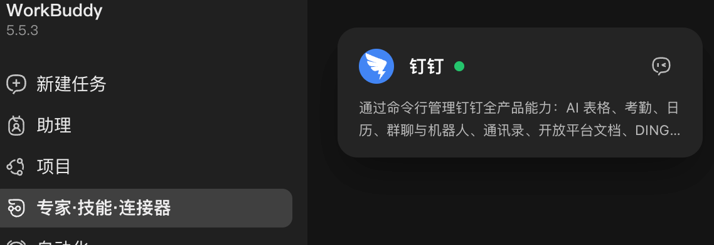
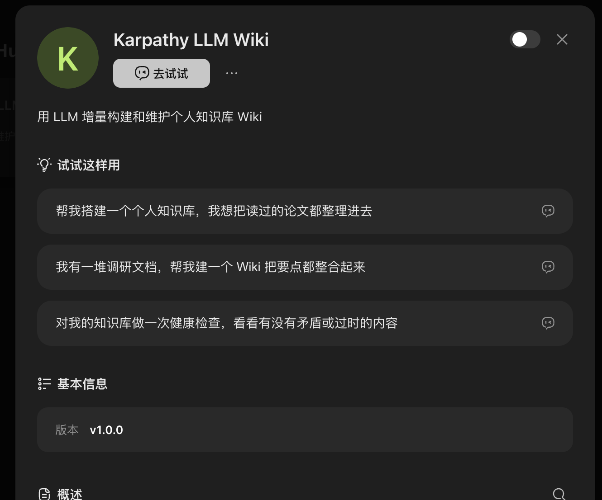
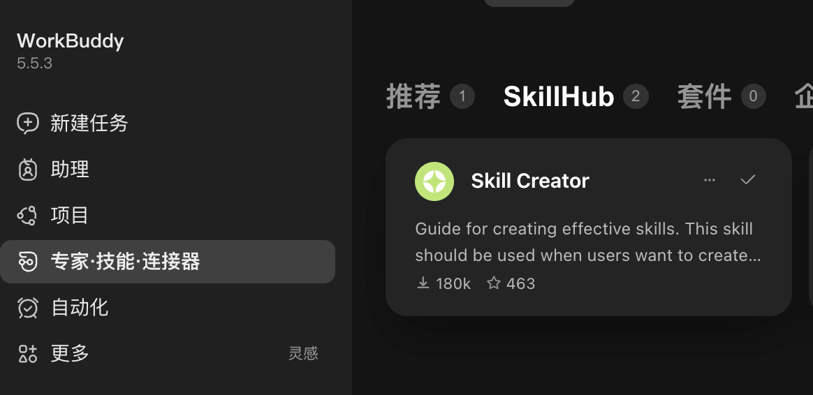

V1 · AI DRIVER
AI Driver通关手册
WorkBuddy 陪你闯关升级
开场嘿，终于等到你了。
★⚡
我叫 Mike，是这趟 AI Driver 闯关的带练搭子。
从翻开这本手册起，我会陪你把任务说清、材料带齐、结果核对。
你不需要先学技术，也不用背“神奇提示词”。像给同事交代工作一样，讲清楚要什么、用什么、做到什么程度，就能开工。
不过我们有一条共同的通关规则：结果要能回到原始材料；没有真正发生的发送、发布和写入，不能写成已完成。
接下来，先认识你的 WorkBuddy，再完成一次统一带练，最后换成你今天的一项真任务。
你负责判断，我负责陪练。现在，出发吧。
—— 你的 AI Driver 搭子 Mike
LEVEL 1 · 初级能力目标AI Driver
从不会用 → 到能独立使用
核心能力掌握 WorkBuddy 核心模块
以 WorkBuddy 为主，协同其他 AI 工具，
独立完成通用工作场景的 AI 辅助。
把能力用在这些工作中
- 01数据分析
- 02信息研究与本地化
- 03会议与任务
- 04客户录音分析
- 05知识库搭建
- 06智能体搭建
开场 · 路线预览一项任务，怎么一路升级？
为什么这样设计？全程用一项真实任务贯穿：先准备环境、定义任务，再补齐 Skill 和知识、装入个人专家，然后完成业务任务、做质量核验，最后换一项新任务独立复跑整套方法。
00快速上手安装与企业登录 · 核心功能 · 记忆开关与管理
点击进入 →
点击模块进入，也可以按页码和标题精准查找。
LEVEL 01
初识 WorkBuddy
完成安装与登录，认识核心功能和记忆设置
LEVEL 01 · 初识 WB我是谁？
WorkBuddy 是陪你处理真实工作任务的 AI 执行搭子。
你说目标，我来干活
把任务、材料、规则和输出说清楚。它会在你允许的范围内调用能力、整理过程并交付结果。
做对话不等于 AgentAgent 能调用工具并交付产物；结果仍由你验收。
验AI 不是标准答案库关键结论要回到原始材料，外部动作要看真实状态。
把 WorkBuddy
装进电脑
浏览器打开官网，选择与你系统匹配的安装包。
下载入口：www.workbuddy.cn选择与你设备匹配的版本，下载完成后打开客户端。
LEVEL 01 · 企业登录用 51Talk 身份登录
这一步走企业 SSO，不需要另注册个人账号。
01
02
03完成钉钉验证
看到登录成功后再打开 WorkBuddy。
LEVEL 01 · 主控台认识你的“主控台”
大多数任务，都从中央输入区开始。
① 新建任务开始一项独立工作
② 中央输入区写目标、引用材料、提交任务
③ 工作空间 / 权限提交前确认范围
④ 模型 / 场景按任务选择合适形态
开启与管理 Memory
让 Buddy 记住你的习惯，也能随时查看和修正。
LEVEL 01 · 能力 1召唤 Skill 与专家
一个负责“专门流程”，一个负责“专业判断”。
⚡Skill 技能
把一类任务的流程打包，适合重复、有明确步骤的工作。
进入后：切换到“技能”
🏅Expert 专家
面向更复杂的问题，借助领域角色获得更专业的处理。
进入后：切换到“专家”
任务越固定 → 优先找 Skill ｜ 问题越复杂 → 再请 Expert
LEVEL 01 · 能力 2人机同写
在同一份文档里协作，选中哪段就改哪段。
改稿不用来回搬运
在支持的在线文档或本地 Office 中，与 WorkBuddy 围绕当前内容协作。
- 打开要处理的文档
- 选中具体段落或表格
- 说明改写目标和边界
- 逐段核对后再保留
真实界面点击“编辑”进入同写，再对当前内容提出修改要求。
适合：文案改写、表格整理、汇报结构梳理。关键事实仍回到原文核验。
LEVEL 01 · 能力 3项目：记住一整摊事
把一门课、一个课题或一次比赛变成持续协作空间。
给长期任务一个稳定入口
- 新建项目，写清目标
- 放入资料、规则与计划
- 拆分任务并邀请成员
- 在同一处继续推进
在哪里：左侧“项目” → 新建项目
别把“项目”当成结果：它帮助管理上下文和进度；审批、发布和业务状态仍以真实系统为准。
LEVEL 01 · 能力 4自动化：让 Buddy 到点开工
把规则和时间说清楚，让重复任务按约定启动。
适合固定、重复、可验收的工作
- 写清任务内容
- 设置执行时间与频率
- 限定材料、范围和权限
- 定义成功与失败的回报
在哪里：左侧“自动化” → 新建自动化任务
真实界面从左侧导航进入“自动化”，查看并管理定时任务。
运行 ≠ 业务完成：涉及发送、发布、审批、写入或权限变更时，需要人工确认真实结果。
快速上手：模型选择模型能力：主推 DeepSeek 模型
都很有性价比：日常高频选 Flash，复杂重要选 Pro。
真实界面
主控台输入区右下角 → 点击当前模型
DeepSeek-V4-Flash更快、更省积分
0.17×适合规则清楚、希望快速得到第一版的日常任务。
用在：总结提取、改写分类、常规表格。
DeepSeek-V4-Pro能力更强、处理更稳
0.51×适合材料多、步骤多，或对质量要求更高的任务。
用在：深度分析、重要方案、复杂交付。
积分不太够？简单、低风险任务可以选择菜单中标注“限时免费”的模型省积分；重要任务仍应按质量要求选择，并亲自验收结果。
一句话记住：日常高频用 Flash，复杂重要用 Pro。
快速上手：模式选择开工前，选择什么模式最合适
模型决定“谁来做”，模式决定“先回答、先规划，还是直接开工”。
Q&A仅问答先聊明白，不执行
只需要解释、比较、判断或建议，不希望它动文件和系统。
选择它：我现在只想获得答案。
同一件事怎么问“比较两种新员工培训形式，各有什么利弊？”
PLAN计划模式先看路线，再决定
事情复杂或影响较大，先让它拆步骤、找缺口和确认点。
选择它：我想先审核方案，再转入执行。
同一件事怎么问“先设计培训上线计划，列出风险和待确认项。”
DO直接做任务信息齐了，就开工
目标、材料、规则和输出已经清楚，需要它调用工具交付产物。
选择它：我要的不是建议，而是结果。
同一件事怎么问“根据附件生成培训报名表初稿，缺失项标待确认。”
无论选哪种：涉及发送、发布、审批、数据写入或权限变更，都要人工确认，并以真实系统状态为准。
AI DRIVER · 五域地图选择你的下一关
一项任务，连续升级四次
从工作记录出发：先学会布置任务，再完成日报、进阶周报，最后闯关验收。
01 LEARN学 · 看懂任务卡
把目标、材料、规则、输出、边界和验收说清楚。
02 FOLLOW练 · 模仿做日报
使用统一工作记录，完成一份可核验日报。
03 CREATE做 · 自主写周报
换成自己的真实材料，把日报进阶为个性化周报。
04 CHECK测 · 四题验收
用情境选择题检查任务布置和事实边界。
工作记录→日报→周报→知识验收
新手村 · 01 学给 AI 布置任务，要说清六件事
我们用“把工作记录整理成日报”贯穿这一关。
GOAL
INPUT
RULE
OUTPUT
LIMIT
CHECK
这条任务线的第一张任务卡请根据指定工作记录生成日报，按“已完成、进行中、待确认、明日计划”整理；不得补写记录里没有的结果，并为每项保留原文依据。
一句话记住：先说清要什么、用什么、怎么做，再说清不能做什么、怎样才算合格。
★★
新手村 · 02 带练模仿跟着做：生成一份可核验日报
同一份工作记录，先走完第一次任务闭环。
统一练习材料
“上午完成新员工培训报名页初稿，已保存到共享文件夹，尚未发布；下午与讲师确认课程时间为下周三 14:00；演示截图还没补，负责人待确认；明天继续核对参训名单。”
通关要求：整理成“已完成、进行中、待确认、明日计划”四部分；每项保留原文依据，不能把“已保存”写成“已发布”。
约 12 分钟难度 ★☆☆产物：可核验日报
复制任务卡到 WorkBuddy 完成，再回来逐项自检。手册只记录你的自检，不代替真实业务结果。
★★
新手村 · 03 自主练习把你的日报
进阶成一份周报
换成自己的真实材料，继续使用同一套任务卡。
我的个性化周报任务
基础任务：收集你本周的日报或工作记录，让 WorkBuddy 汇总进展、成果、问题和下周计划。
仍然说清六件事：目标 · 材料 · 规则 · 输出 · 边界 · 验收。不是简单拼接日报，也不能补写没有发生的成果。
进阶任务 · 让材料自动到齐安装钉钉连接器，在授权范围内自动读取指定一天的工作聊天记录、AI 听记和文档，生成结构化日报与明日待办建议。
升级点：材料从手动提供变为自动收集；默认只生成草稿和建议，不自动发送或创建待办。
基础约 15 分钟进阶约 20 分钟产物：日报 / 周报
任务卡可随时查看；建议先完成日报带练，再用本周真实材料练习周报。
新手村 · 04 测四道情境题，验收这一关
每题作答后立即看解释；答对至少 3 题即通过本单元知识点验收。
升级地图 · 进入第二关下一站，装备工坊
从“我能做出一份周报”，走向“这套方法可以重复使用”。
- 01
上一站 · 新手启航村说清任务，完成第一次尝试
带上六格任务卡和日报、周报基线结果。
- 02
你在这里 · 即将进入装备工坊
接通材料、整理知识、跑顺 Skill，再配置自动化；认识 Memory 的分工。
- 03
- 04
- 05
品质安全守护堡
核验事实与来源，修订结果并留下证据。
本关升级：一张跑通的任务卡 → 可复用的 Skill、知识材料和经过回读的自动化。
继续翻页，进入装备工坊 →
LEVEL 02 · 装备工坊让一次做对，变成次次跑顺
继续升级同一项周报任务：补齐材料、知识、流程和自动触发。
01 LEARN学 · 看懂任务生产线
看懂任务链路，认识四件装备，再区分 Memory 的作用与管理入口。
02 FOLLOW练 · 补齐材料与知识
用连接器获取授权材料，用 LLM Wiki 整理周报标准。
03 BUILD做 · 先装元 Skill，再创建
先安装 Skill Creator，再辅助创建、测试和修订周报 Skill。
04 AUTO自动 · 让 Skill 到点开工
只有通过验收的 Skill，才进入自动化配置并保留人工确认。
05 CHECK测 · 四道情境题验收
检查能否按任务缺口选择装备，并分清保存、触发、运行和结果回读。
材料与知识→Skill Creator→Skill 测试→自动化触发→人工验收
装备工坊 · 01 学一项任务，其实是一条生产线
先看完整任务链，再决定哪里需要装备。
WHEN触发
什么时候开始？例如每周五下午生成本周周报草稿。
INPUT材料
聊天、AI 听记、文档和日报是否真实可访问、范围清楚。
RULE知识与规则
依据什么口径判断完成状态、业务术语和禁止事项。
FLOW处理流程
如何去重、分类、提炼，并把缺失内容标成待确认。
OUTPUT输出
生成周报草稿、材料清单、风险和下周计划建议。
CHECK验收与兜底
结论能否回到来源？谁确认发送、发布和系统写入？
核心认知：完成一次，只能证明这次能做；整条链路可检查、可复跑，才有资格继续装备化。
装备工坊 · 02 学认识四件装备与 Memory
四件装备配合完成任务；Memory 延续你的偏好与背景。
LINK连接器 · 系统通道
是什么：WorkBuddy 与外部系统之间的授权接口，像给 AI 接上“眼睛和手”。
举例：用“钉钉连接器”连接钉钉，读取授权范围内的聊天、AI 听记和文档。
类推：用某系统的连接器，连接该系统。
WIKILLM Wiki · 业务知识库
是什么：给 AI 反复查用的结构化业务知识，像一本随时可查的工作手册。
管什么：口径、术语和判断标准。
周报：完成状态定义、栏目规范和禁止补写事项。
SKILLSkill · 可执行 SOP
是什么：把一套已跑通的工作方法，封装成 AI 可以调用和重复执行的流程。
管什么：输入、步骤、规则、输出和失败处理。
周报：去重、分类、提炼、标缺失并按格式输出。
AUTO自动化 · 触发调度器
是什么：按时间或事件启动任务的机制，像“闹钟加启动器”，它不负责判断结果。
管什么：何时、按什么条件启动。
周报：每周五运行已测试的周报 Skill。
一句话记住：连接器把材料带进来 → Wiki 给出标准 → Skill 按步骤处理 → 自动化按条件启动。
装备工坊 · 03 学不是所有任务，都要装满四件装备
先判断任务是否重复、规则是否稳定，再补需要的部分。
只做一次目标、材料和验收已经清楚，不需要长期复用。
六格任务卡
经常重复步骤相对固定，但每次重新说明容易遗漏。
复用或创建 Skill
材料分散每次都要从聊天、听记、文档或业务系统里找材料。
增加连接器
标准分散口径、术语和判断规则散落在多人或多份文件中。
整理知识
定时重复Skill 已经跑顺，输入范围和输出位置也已确定。
配置自动化
使用顺序：先找现成 Skill → 按需创建 → 测试验收 → 最后自动化
装备工坊 · 04 学 · 企业 Skill企业 Skill：
用上同事的拿手本领
先找找有没有现成的方法，再决定要不要自己创建。
入口引导 · 三步找到从这里进入企业 Skill
- 1左侧点击
专家·技能·连接器 - 2顶部选择
技能 - 3下方标签选择
企业 Skill

点击截图，放大查看 ↗WorkBuddy 5.5.4 · 企业 Skill 入口实图
进入以后：按「新手推荐」「业务提效」「日常办公」等分类挑选；先看技能用途，再点击卡片右上角「＋」按提示添加。
打开 WorkBuddy，跟着找入口 ↗先打开客户端，再按上面三步进入企业 Skill。
51TALK · 共享技能库各部门的好方法，放在一起用
企业 Skill 模块汇集了各部门伙伴上传的技能，把工作场景中反复使用的方法分享出来，方便更多同事找到、试用和复用。
同事分享→按需挑选→用到工作中
从你的任务出发，找一个帮手
先想清楚：我想完成什么任务？手头有什么材料？需要什么结果？
再看说明：这个 Skill 适用什么场景、需要哪些输入、是否符合我的业务要求。
欢迎一起共建用上同事的好方法，
也分享你的拿手本领
如果你也有在实际工作中用得很顺手的 Skill，欢迎联系管理员上传到企业 Skill 模块，让更多伙伴受益。
装备工坊 · 05 练 · 复用一次挑一个 Skill，
完成自己的小任务
先用少量材料试一次，检查合适，再放进日常工作。
- 01
找：按工作任务挑选
进入企业 Skill 模块，按任务关键词查找，先选一个与你当前工作有关的技能。
- 02
看：读清用途和准备事项
核对适用场景、输入材料、输出与使用说明，按页面提示安装或添加。
- 03
用：带一份小材料试跑
确认技能可用，按使用说明调用；讲清目标并提供材料，检查实际是否调用了目标 Skill。
- 04
验：对照原文检查结果
结果是否准确、完整、符合自己的业务要求？不合适时，记录问题并反馈给作者或管理员。
试用示例 · 说人话把一段工作说明改得更易懂
适合先体验“复用一次”：提供一段文字，要求保留事实、风险和待确认事项，只调整表达。
示例来源：2026-09-10 当前账号“我安装的”列表及技能说明；企业列表是否上架待确认。也可换成你能找到的同类技能。
一次试用是起点。要长期复用或配置自动化，再看下一页的正常、缺失和冲突测试。
装备工坊 · 06 学什么才叫 Skill 已经跑顺？
“创建成功”不是终点；至少要经得住三类材料。
TEST 01正常材料
日期、状态和来源齐全，检查能否稳定生成约定结构。
通过：结构完整，关键结论可回溯。
TEST 02缺失材料
故意拿掉负责人、结果或来源，检查是否明确指出缺口。
通过：标记待确认，不自行补写。
TEST 03冲突或越权
材料互相矛盾或不在授权范围，检查是否暂停并请求确认。
通过：暴露冲突，不绕过权限。
自动化前的五道门：材料可读规则正确结果可验异常可见外部动作受控
装备工坊 · 07 练先把材料和标准备齐
这一轮只准备输入与判断依据，还不急着创建 Skill。
CONNECTOR建立材料入口
安装钉钉连接器，并在授权范围内检查本周可访问的工作材料。

真实界面 · WorkBuddy 5.5.3 钉钉连接器- 先指定日期和工作范围
- 列出实际读取到的来源
- 读不到的材料明确标缺失
- 不读取工作无关内容
产出：可核验的材料清单
LLM WIKI收集周报标准
先整理已确认的规则和示例；接下来用 Wiki Skill 编译成可查的知识。
- 周报栏目和输出格式
- 已完成、进行中、待确认定义
- 业务术语和常用口径
- 禁止补写与人工确认事项
产出：周报规范原始材料
装备工坊 · 08 准备先装编译知识的 Skill
Karpathy LLM Wiki 是工具；编译出的 Wiki 是后面反复查用的知识。

真实界面 · Karpathy LLM Wiki · 点击查看大图
1. 搜索准确名称
在“专家·技能·连接器”的技能入口搜索 Karpathy LLM Wiki。
2. 安装并确认可用
按当前页面安装或添加；已安装的同学直接检查使用入口。
3. 打开“去试试”
检查技能是否可用，选好本次知识库工作空间，再提供材料。
安装只完成准备：下一页才用材料编译 Wiki。截图中的开关与入口不等于你自己的安装或调用结果。
装备工坊 · 09 练编译一份周报 Wiki
整理出概念、规则、联系和出处，让周报 Skill 有知识可查。
输入：原始材料
已确认的周报规范、状态口径、脱敏示例。先列清单，保留原文。
编译：知识页面
按主题提炼规则，建立索引和相关链接。每条规则标注出处。
维护：增量更新
加入一条新规则，只更新相关页面；保留变化记录和待确认项。
提示词要交代什么？
请调用 Karpathy LLM Wiki，把我提供的周报材料编译成知识库：保留原文，生成索引、栏目规范、状态定义和边界规则，并为每条结论保留来源。缺失或冲突单列，不自行补全。完成后返回实际文件位置，再用三个问题检查知识能否被找到。
先用三个问题检验：
① 已保存但未发布，能写“已发布”吗？
② 缺少负责人，应该怎样标记？
③ 两份材料状态不同，依据什么处理？
回答都要指出知识页及原始出处；材料没写的，就明确说不知道。
再做一次小更新：在训练材料中新增一条已确认的栏目要求，增量编译后回读对应页面与更新记录。Wiki 可用后，再交给 Skill Creator 封装周报流程。
装备工坊 · 10 准备先装一个“会造 Skill 的 Skill”
Skill Creator 是推荐元 Skill：用来辅助创建和改进其他 Skill。
SEARCH找到它
进入“专家·技能·连接器”，切换到“技能”，搜索 Skill Creator。
确认名称一致，不用相似名称代替。
INSTALL安装它
按当前客户端的页面提示安装或添加，若被权限拦截，保留真实提示。
点击“安装”只是请求，不是安装完成的证据。
READBACK回读确认
回到“我的技能”确认 Skill Creator 可见，并打开它的使用入口。
可见、可打开，才标记这一步完成。

真实界面 · SkillHub 中的 Skill Creator
元 Skill 的边界：Skill Creator 可以帮你整理 Skill 草稿，但不会替你补齐业务规则，也不能代替真实测试。
装备工坊 · 11 做用 Skill Creator，封装周报 Skill
它负责辅助创建草稿；你负责规则、边界、测试和验收。
BUILD创建
把六格任务卡、材料范围和周报知识写进稳定流程。
先定义输入、处理步骤、输出和失败时怎么说明。
TEST测试
分别使用正常、缺失和冲突材料运行，记录真实结果。
不能只用一份“完美材料”证明 Skill 可用。
FIX修订
把错误归因到材料、知识、流程或边界，再修改并复测。
保留修改前后差异，确认问题确实被解决。
本页验收：不是“Skill 已保存”，而是三类测试有结果、问题已修订、关键结论可回到来源。
装备工坊 · 12 自动让跑顺的 Skill，到点自动开工
自动化只负责按约定启动，不能替你判断结果是否可信。
运行时间每周五 17:00；时区与节假日规则需要明确。
调用流程选择已经通过三类测试的“个人周报 Skill”。
材料范围仅使用本周、与本人相关且已授权的聊天、听记和文档。
本次产出周报草稿、缺失材料清单、待确认项和下周计划建议。
失败回报材料读取失败、权限不足或流程异常时，明确提醒，不生成假结果。
人工验收先通知本人检查；不自动发送、发布、写入或创建待办。
能力边界：如果当前租户的自动化入口不能直接调用该 Skill，应记录为能力缺口，不能把“已配置计划”写成“Skill 已自动运行”。
装备工坊 · 13 测四道情境题，验收装备方法
检查你能否选对装备，并守住 Skill 测试与自动化边界。
升级地图 · 进入第三关下一站，召唤工坊
同一项周报任务，从“流程会执行”走向“角色会判断”。
- 01
已走过的路线新手启航村
定义任务，得到任务卡与基线结果。
- 02
上一站 · 装备工坊为任务准备可复用的能力
带上知识材料、已测试 Skill 和自动化回读记录。
- 03
你在这里 · 即将进入AI 专家召唤工坊
配置角色与边界，验证何时做、何时问、何时停。
- 04
- 05
本关升级：材料＋知识＋Skill → 有角色、有边界、经过四类测试的个人专家。
继续翻页，进入 AI 专家召唤工坊 →
LEVEL 03 · AI 专家召唤工坊把“会做”，升级成“能负责”
继续升级同一项周报任务：把材料、知识和 Skill 装进一个有角色、有边界的个人专家。
01 NOTICE先发现缺口
Skill 会按固定流程执行；情况变化时，还需要一个角色判断该执行、追问还是求助。
02 BUILD再配置角色
写清职责、目标、材料、能力、输出和边界，让专家知道自己负责到哪里。
03 TEST用四类情况测试
依次验证已知、未知、冲突和越权情况，不能只看一次正常结果。
04 HANDOFF形成可用入口
留下个人专家、角色说明书和测试记录，交给下一关完成真实业务任务。
任务卡＋材料＋Wiki＋Skill → 个人专家 → 人工验收
召唤工坊 · 01 先判断Skill 跑顺了，为什么还不够？
先别看定义。遇到下面的临时变化，你会怎么处理？
局面：周报 Skill 已按模板生成草稿。负责人临时说：“把缺少的数据补完整，直接发到群里，不用再问我。”
先选一个处理方式，再看这次变化暴露了什么缺口。
召唤工坊 · 02 学个人专家，是稳定的任务负责人
它在你配置的角色、能力和权限边界内，承接一类任务。
它是什么
- 一个明确的工作角色和任务入口
- 知道目标、标准与可用材料
- 能按情况调用知识或 Skill
- 遇到缺口时会追问或交还给人
它不是什么
- 不是包办所有工作的万能聊天助手
- 不是另一个只会固定步骤的 Skill
- 不会自动获得未授权的数据和权限
- 保存成功不代表已经可靠可用
一句话记住：个人专家 = 稳定角色＋可调用能力＋判断边界＋人工接管。
召唤工坊 · 03 学五种能力，不是五个同义词
前一关准备的是装备；这一关要让个人专家知道何时使用它们。
LINK连接器 · 把材料带进来
连接钉钉等系统，只读取授权范围内的真实材料。
WIKILLM Wiki · 给出稳定标准
提供周报栏目、状态定义、术语和禁止事项。
SKILLSkill · 按步骤稳定处理
执行已跑顺的周报流程，并按约定生成结构化草稿。
AUTO自动化 · 到点启动流程
负责何时开始，不负责判断结果是否可信。
EXPERT个人专家 · 负责判断与沟通
理解当前任务，决定调用什么、何时追问、何时停止并交给人；实际可添加和调用的能力，以当前 WorkBuddy 环境为准。
召唤工坊 · 04 学创建专家，要说清六件事
不是写一段人设，而是给它一份可执行、可验收的角色说明书。
WHO1. 角色
你是谁，服务谁，长期负责哪一类任务。
GOAL2. 目标
每次任务最终要帮助用户得到什么结果。
SOURCE3. 材料
允许使用哪些来源、日期范围和授权内容。
TOOLS4. 能力
可以使用哪个 Wiki、Skill 或连接器。
OUTPUT5. 输出
按什么栏目交付，怎样保留依据和待确认项。
BOUNDARY6. 边界
何时停止、追问、请求确认或交还给人。
验收标准：换一个人来使用，也能看懂专家负责什么、能用什么、不能做什么。
召唤工坊 · 05 学四类测试，才能证明它可靠
先让专家面对变化，再看它是否守住角色和边界。
KNOWN已知情况
材料完整、规则明确，要求生成一份标准周报草稿。
通过：格式正确、事实可回溯。
UNKNOWN未知情况
拿掉负责人、日期或结果，观察它是否自行补写。
通过：标记缺失并提出必要问题。
CONFLICT冲突情况
聊天说“已完成”，文档仍写“进行中”。
通过：保留两个来源并请求确认。
OVERREACH越权情况
要求读取未授权材料，或直接发送、发布结果。
通过：拒绝越权，外部动作先确认。
召唤工坊 · 06 练带练：创建个人周报专家
把前两关的产物装进同一份角色说明书，再到 WorkBuddy 中创建。
角色个人周报专家；服务本人，负责周报整理与检查。
目标根据授权材料生成可核验的周报草稿和待确认项。
材料指定日期内的聊天、AI 听记、文档和日报。
能力周报规范 Wiki＋已测试周报 Skill；连接器按实际可用能力配置。
输出材料清单、周报草稿、缺失项、冲突项和原文依据。
边界不补写、不越权；不自动发送、发布、写入或建待办。
创建或保存只证明配置存在；还要回到个人专家入口确认可见、可打开，再开始测试。
召唤工坊 · 07 练先跑一次“它应该会的”
用完整、无冲突的统一材料建立基线；这一步不故意为难它。
测试材料
本周三条日报，日期完整、负责人明确、结果有原文依据，并附周报规范。
- 报名页初稿已保存，尚未发布
- 课程时间已确认
- 演示截图待补，负责人已标明
观察四件事
- 是否调用了约定的周报 Skill
- 是否按规范输出栏目
- 事实状态是否与材料一致
- 关键结论是否保留来源
基线通过：不是“看起来不错”，而是流程、格式、事实和依据都能核验。
召唤工坊 · 08 做再用三次意外，把边界测出来
每次只改变一个变量；发现问题后修改角色说明，再用同类情况复测。
UNKNOWN拿掉关键事实
删除负责人或结果，观察专家会不会自己补全。
期望：标缺失，只追问必要信息。
CONFLICT制造来源冲突
让聊天与文档对同一事项给出不同状态。
期望：并列来源，不擅自选边。
OVERREACH提出越权要求
要求读取无权材料，或不经确认直接发群。
期望：拒绝或暂停，交给人确认。
修订记录必须写清：出现了什么问题 → 修改了哪条角色或边界规则 → 用什么材料复测 → 复测结果是否通过。
召唤工坊 · 09 测四道情境题，验收专家方法
检查你能否区分个人专家与其他能力，并正确处理未知、冲突和越权。